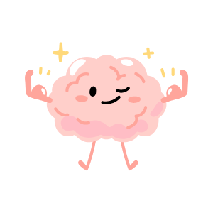
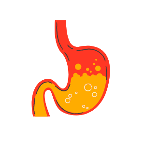
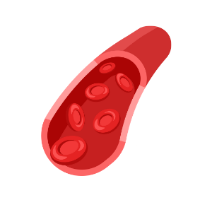
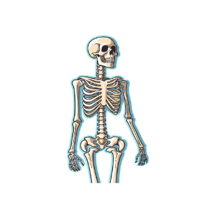
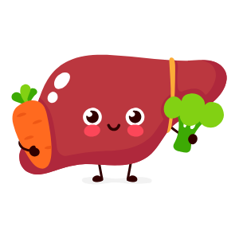
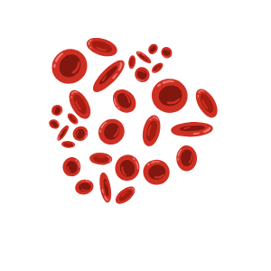
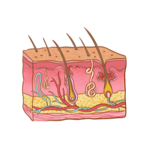
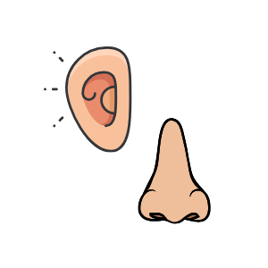
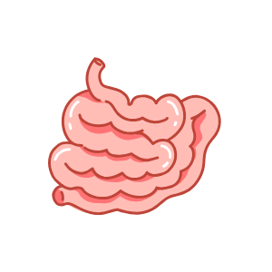

15 FASCINATING FACTS ABOUT THE HUMAN BODY
The human body is a marvel of complexity and efficiency, filled with incredible features that often go unnoticed in our daily lives. From the brain's astounding electrical activity to the regenerative powers of the liver, each part of our anatomy is designed with precision and purpose. Did you know your heart beats over 100,000 times a day, or that your nose can distinguish more than a trillion scents? These fascinating details highlight not only the body’s resilience but also its intricate design, showcasing how biology, chemistry, and physics converge to create the ultimate machine. Let’s dive into 15 amazing facts that reveal just how extraordinary the human body truly is!
The human brain generates more electrical impulses than all the world’s telecommunication systems combined. |
|
|---|---|
|  | The human brain contains around 86 billion neurons, each capable of forming thousands of connections with others. These neurons communicate using tiny electrical signals called action potentials. Every second, the brain sends and processes millions of these signals, which enables thinking, learning, and sensory processing. This level of electrical activity generates approximately 20 watts of power, enough to illuminate a small light bulb. Despite its energy demands, the brain accounts for only 2% of body weight but uses about 20% of the body's energy. |
Your stomach gets a new lining every 3 to 4 days. |
|
|---|---|
|  | The stomach produces hydrochloric acid, which is strong enough to dissolve metal. To protect itself from being digested by this acid, the stomach regenerates its lining regularly. This process involves the shedding of old, damaged cells and replacing them with new ones. Without this continuous renewal, the acid would erode the stomach walls, causing ulcers. This remarkable mechanism ensures the stomach remains functional and protected. |
The human body has enough blood vessels to circle the Earth twice. |
|
|---|---|
|  | If all the blood vessels in the human body—arteries, veins, and capillaries—were laid end to end, they would measure over 60,000 miles. This vast network is crucial for transporting oxygen, nutrients, and waste products to and from the body's cells. The capillaries alone, which are the smallest blood vessels, cover 80% of this distance. Despite their microscopic size, capillaries play a vital role in exchanging substances between blood and tissues. This efficient system supports every organ and keeps the body alive. |
Your body produces about 25 million new cells every second. |
|
|---|---|
Cell production is a natural process of growth and repair in the body. Every second, the body generates 25 million new cells to replace damaged or dying ones. Over a single day, this totals an astounding 2 trillion cells. This regeneration ensures that tissues and organs remain healthy and functional. For example, red blood cells, which carry oxygen, are replaced approximately every 120 days, while skin cells regenerate every 27-30 days. |
The human nose can detect over 1 trillion scents. |
|
|---|---|
The nose is equipped with around 400 different olfactory receptor types that detect airborne molecules. These receptors send signals to the brain, which interprets the combination of activated receptors as distinct smells. This allows humans to distinguish subtle differences in scent, like the aroma of freshly baked bread versus toasted bread. Researchers believe this ability evolved to help early humans detect food, predators, or environmental dangers. Interestingly, smell is also closely linked to memory and emotions due to the brain's olfactory bulb's connection to the limbic system. |
Your bones are stronger than steel. |
|
|---|---|
|  | Bone is an incredible material that combines strength and flexibility. It is composed of a mineral matrix that makes it rigid and collagen fibers that provide resilience. Pound for pound, human bone is about five times stronger than steel of the same density. Despite their strength, bones are lightweight, allowing them to support body movements efficiently. This combination of durability and lightness is why bones can withstand immense forces, such as jumping or running, without breaking easily. |
The average human heart beats about 100,000 times a day. |
|
|---|---|
The heart is a tireless organ that works around the clock to pump blood throughout the body. Each beat pushes oxygen-rich blood to organs and tissues, while also removing carbon dioxide and waste. Over the course of a single day, this adds up to about 100,000 beats and approximately 2,000 gallons of blood circulated. The heart's consistent rhythm is regulated by electrical signals from the sinoatrial node, often called the heart's natural pacemaker. Its ability to keep working without pause is vital for sustaining life. |
Your liver can regenerate itself. |
|
|---|---|
|  | The liver is unique among human organs because it can regenerate lost or damaged tissue. Even if up to 75% of the liver is removed, it can grow back to its original size and function within weeks. This regenerative ability is due to hepatocytes, the liver's main cells, which can divide and multiply. The liver's resilience makes it crucial for detoxifying harmful substances, metabolizing nutrients, and producing essential proteins. However, chronic damage, like from alcohol abuse, can impair its regenerative capabilities. |
The human body contains about 37.2 trillion cells. |
|
|---|---|
|  | The human body is made up of trillions of cells, each specialized for a particular function. These cells form tissues, which combine to make organs like the heart, lungs, and brain. Red blood cells are the most abundant type, while nerve cells can be incredibly long, extending from the brain to the spinal cord. This cellular complexity allows the body to perform countless tasks, from digesting food to thinking critically. Each cell also contains DNA, the blueprint of life. |
You shed about 1.5 pounds of skin each year. |
|
|---|---|
|  | The outermost layer of skin, the epidermis, is constantly renewing itself. Dead skin cells are shed daily and replaced by new cells generated in the lower layers of the epidermis. Over the course of a year, this shedding process results in approximately 1.5 pounds of dead skin. This natural exfoliation helps the skin stay smooth and healthy while protecting against environmental damage. Interestingly, much of the dust in your home consists of these microscopic skin particles. |
Your ears and nose never stop growing. |
|
|---|---|
|  | While most body parts stop growing after puberty, the ears and nose continue to grow throughout life. This is due to the cartilage in these structures, which gradually changes shape and size with age. Additionally, gravity can cause the ears and nose to elongate slightly over time. These changes are subtle but noticeable in older adults. The continuous growth contributes to the perception of aging. |
Your small intestine is about 22 feet long. |
|
|---|---|
|  | The small intestine, despite its name, is the longest part of the digestive system. It is coiled tightly in the abdomen to fit within the body. The small intestine plays a vital role in digestion, absorbing nutrients from food and passing them into the bloodstream. Its inner lining is covered in tiny, finger-like projections called villi, which increase the surface area for absorption. The length and design of the small intestine maximize nutrient extraction from food. |
You blink around 20,000 times per day. |
|
|---|---|
Blinking is a reflex that keeps the eyes lubricated and protected from dust and debris. Each blink spreads a layer of tears over the eye's surface, ensuring it stays hydrated and clean. On average, humans blink every 4-6 seconds, resulting in about 20,000 blinks a day. This small but essential action prevents eye strain and allows the eyes to rest momentarily. Blinking is so automatic that we rarely notice how often it happens. |
The human body glows in the dark (bioluminescence). |
|
|---|---|
Though invisible to the naked eye, the human body emits a faint light due to metabolic reactions. These reactions release photons, or light particles, as byproducts. Advanced imaging techniques have captured this phenomenon, revealing that the glow is strongest in the face, neck, and hands. The light is about 1,000 times weaker than what the human eye can detect. This natural luminescence peaks during the late afternoon and diminishes at night. |
Humans have a unique tongue print. |
|
|---|---|
Just like fingerprints, every person's tongue has a unique pattern of ridges and grooves. These patterns are determined by genetics and remain unchanged throughout life. The tongue's surface is covered in papillae, which house taste buds and give it its texture. Scientists have considered using tongue prints as a biometric identifier due to their uniqueness and difficulty to replicate. Beyond identification, the tongue plays crucial roles in speech, eating, and taste perception. |
The human body is a remarkable masterpiece, combining resilience, adaptability, and complexity in ways that continue to astound scientists and inspire curiosity. These 15 fascinating facts are just a glimpse into the countless wonders within us, reminding us of the marvels we carry every day. Whether it’s the strength of our bones, the power of our brain, or the unique intricacies of our cells, our bodies are proof of nature’s ingenuity. As we uncover more about ourselves, let’s celebrate and care for this incredible vessel that makes life possible. The journey of discovery is endless, and so is the wonder of the human body.
About Us
Welcome to Fact Fusion, your go-to resource for reliable and up-to-date information across a wide range of topics. Founded with the goal of bridging knowledge gaps, Fact Fusion brings you the latest insights, trends, and educational resources. Our team of writers, researchers, and subject matter experts work tirelessly to bring you high-quality content that helps you stay informed, make decisions, and grow. Join us on this journey to learn, explore, and discover new perspectives.
Mission
Our mission is to empower individuals and businesses by providing clear, accurate, and easily accessible knowledge. Whether you're looking for tips, research, or solutions, we’ve got you covered with expertly crafted content that’s designed to educate and inform.
Vision
We believe that knowledge is the key to progress. By staying ahead of emerging trends, continuously refining our content, and prioritizing user needs, we strive to create an online space where anyone—from curious learners to seasoned professionals—can find the resources they need to succeed in today’s fast-paced world.
Our Services
Our team delivers reliable insights across a variety of topics, ensuring you have the tools to make confident decisions. From industry reports to personalized consultations, we’re here to help you stay ahead of the curve. Let us be your trusted partner in navigating today’s information landscape."
Feedback Form
Contact Us
Email: 7mo.on.no.om7@gmail.com
Phone: +63 923-456-7890